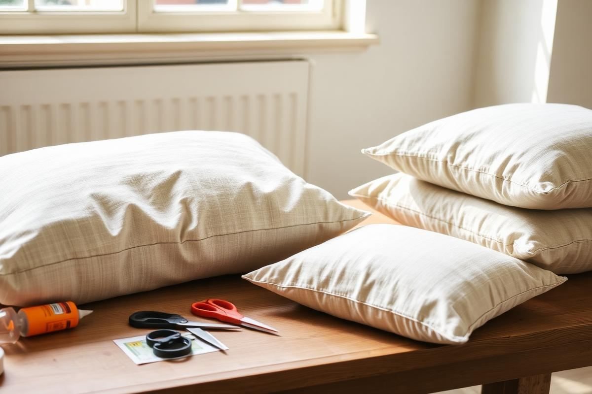
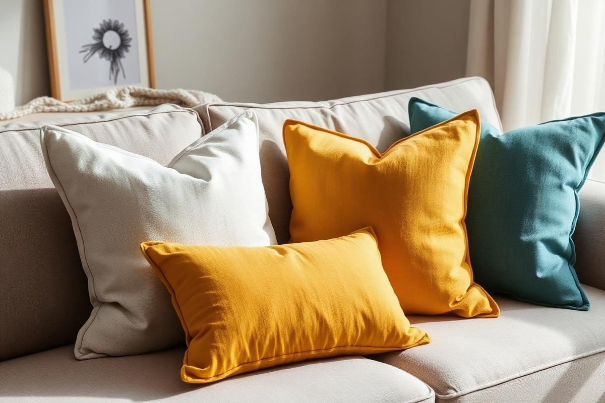
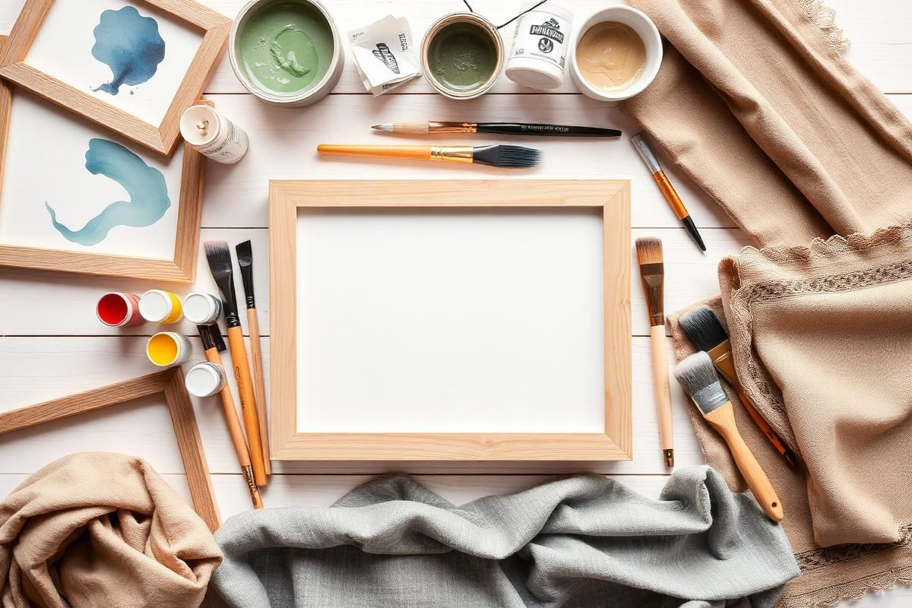

DIY No-Sew Pillow Covers in Under an Hour

Cushions are the cheapest way to change the mood of a room, and the most expensive way if you buy them ready-made. A pair of good linen covers can cost more than the fabric needed to make six. Once I worked out that a no-sew cover takes about fifteen minutes and looks indistinguishable from a bought one at arm's length, I stopped buying them altogether and started keeping a box of half-metre remnants instead.
This guide covers three methods in order of durability. The envelope fold uses no adhesive at all on two of its edges, iron-on hem tape gives the crispest finish, and fabric glue is the fastest when you want something done before guests arrive. All three work on standard 45 cm and 50 cm cushion pads.
Why no-sew is worth it
Beyond cost, the real advantage is speed of change. Seasonal decorating usually stalls because swapping a room over feels like a project. When covers take a quarter of an hour each, changing the palette from summer whites to autumn rust becomes a single evening's work, and you can store the flat covers in a drawer rather than housing six spare cushions in a cupboard.
It is also the most forgiving fabric project there is. There is no tension to set, no bobbin to thread, and if a seam goes wrong you re-press it and try again with another two centimetres of tape.
Choosing the right fabric
Medium-weight woven fabrics work best: washed linen, cotton canvas, cotton twill, and upholstery-weight remnants. They hold a pressed fold, they do not fray excessively, and adhesive grips them properly. Avoid anything stretchy, anything very thin, and anything with a heavy pile like velvet — jersey distorts, voile shows the adhesive through the weave, and velvet will not take a crisp fold.
- Washed linen: best drape and the most expensive-looking result.
- Cotton canvas: sturdy, cheap, and takes dye or block printing well.
- Wool blend suiting remnants: excellent for autumn and winter covers.
- Avoid jersey, silk, voile, and anything with more than 5 per cent elastane.
Buy 0.5 m of 140 cm wide fabric per 45 cm cushion and you will have enough for one cover with a comfortable margin. Wash and press the fabric before cutting, because a cover made from unwashed cotton will shrink out of shape the first time you clean it.
Measuring and cutting
Measure the pad itself, not an existing cover. For a snug finish that keeps the corners full, cut the fabric 1 cm smaller than the pad across the width, and for the length take the pad width, double it, then add 18 cm for the envelope overlap plus 4 cm for hems. For a 45 cm pad that gives a rectangle of 44 x 112 cm.

Cut with sharp fabric scissors or a rotary cutter against a straight edge. A wobbly cut line is the single thing that gives away a homemade cover, so take the extra minute to mark with tailor's chalk first and cut on the line rather than freehand.
Method one: the envelope fold
Press a 2 cm double hem on both short ends and fix it with hem tape or glue. Lay the fabric right side up, fold one hemmed end in to the centre, then fold the other hemmed end over it so the two overlap by about 15 cm. Press the outer folds flat, then bond the two long open edges closed with tape or glue, working 1.5 cm in from the edge.
Turn the cover right side out, push the corners out fully with the blunt end of a pencil, press again, and insert the pad through the overlap. Only the two long edges carry any adhesive, which is why this is the most durable of the three methods.
Method two: iron-on hem tape
Iron-on hem tape is a fusible web that melts between two layers of fabric under heat. Use a 2 cm width, set the iron to the fabric's own heat setting without steam, and press for a full 10 seconds per section rather than sliding the iron along. Let each bonded section cool completely before you move the piece — the bond forms as it cools, not while it is hot.
- Always test the tape on an offcut first; some linens need a pressing cloth.
- Bond 1.5 cm in from the raw edge so the seam allowance is fully enclosed.
- Press from the wrong side to avoid shine marks on the finished face.
- Let it cool fully before turning the cover right side out.
Method three: fabric glue
Permanent fabric glue is the fastest route and the right answer for heavier weaves that hem tape struggles with. Run a thin continuous bead 1.5 cm from the edge, press the layers together, and weight the seam under a stack of books for the cure time on the bottle, usually two to four hours. Resist the temptation to use more glue than you need; excess soaks through and leaves a stiff dark line visible from the right side.
Choose a glue labelled washable and flexible. Craft glues that dry hard will crack along the seam the first time somebody leans back into the cushion.
Washing and durability
Treat no-sew covers as gentle-wash items. Remove the pad, turn the cover inside out, and wash cold on a delicate cycle, then line dry. Heat is what breaks fusible bonds, so never tumble dry a taped cover and press it on the reverse when it is slightly damp rather than blasting it dry with a hot iron.
Realistically, a hem-taped cover survives ten to fifteen gentle washes before an edge starts to lift, at which point you simply re-press it with a strip of new tape. A glued cover on canvas lasts longer. Either way, the repair is a two-minute job.
Styling the finished cushions
Make covers in odd numbers and vary the texture rather than the colour. A three-cushion sofa arrangement of one linen, one canvas, and one wool blend in the same tonal family looks considered; three identical covers looks like a set you bought. Keep the pads slightly larger than the covers so the corners stay plump — a 50 cm pad in a 48 cm cover is the trick behind every full-looking cushion in a magazine shoot.
Finally, keep the offcuts. The strips left over from a 140 cm width are exactly the right size for a matching napkin, a small bolster, or a strip of trim on a plain shop-bought cover, which is a good way to tie an existing cushion into your new palette without remaking it.
Key takeaways
- Cut the cover slightly smaller than the pad so the corners stay full.
- Pre-wash and press fabric before cutting to avoid shrinkage later.
- Press hem tape for 10 seconds per section and let it cool before moving.
- Use washable, flexible fabric glue on heavy canvas rather than craft glue.
- Vary texture rather than colour across a group of three cushions.
Frequently asked questions
Are no-sew pillow covers washable?
Yes, on a cold delicate cycle with line drying. Avoid tumble drying, which breaks fusible bonds, and re-press a lifted edge with fresh hem tape when needed.
How much fabric do I need for one pillow cover?
About 0.5 m of 140 cm wide fabric per 45 cm cushion. Cut a rectangle roughly 44 x 112 cm for a snug envelope cover.
What is the best fabric for no-sew cushion covers?
Medium-weight wovens: washed linen, cotton canvas, twill, or wool blend remnants. Avoid jersey, silk, voile, and velvet.
Is fabric glue or hem tape better?
Hem tape gives a crisper, thinner seam on linen and cotton. Fabric glue is stronger on heavy canvas and upholstery weights but needs several hours to cure.
Why do my cushion corners look flat?
The pad is too small for the cover. Use a pad 2 to 4 cm larger than the finished cover, and push each corner out fully before pressing.

Sophia Bennett is a certified interior stylist and the senior editor at Styleire. She has spent more than eight years helping homeowners and renters create warm, functional interiors, with hands-on experience across small city apartments and family homes. Her work has been informed by close collaboration with independent designers, craftspeople, and product testers.
View full profile →Related reading

Cozy Bedroom Ideas: 12 Changes That Actually Make a Difference
Cozy is a feeling built from small, specific choices. Here are the twelve that make the biggest difference.

DIY Wall Art Ideas That Don't Look DIY
You don't need to paint to make wall art. Some of the best DIY pieces are almost entirely assembly.

How to Arrange Throw Pillows on a Sofa Without Overdoing It
How to Arrange Throw Pillows on a Sofa Without Overdoing It — a clear, editor-tested guide covering the essentials without the filler.